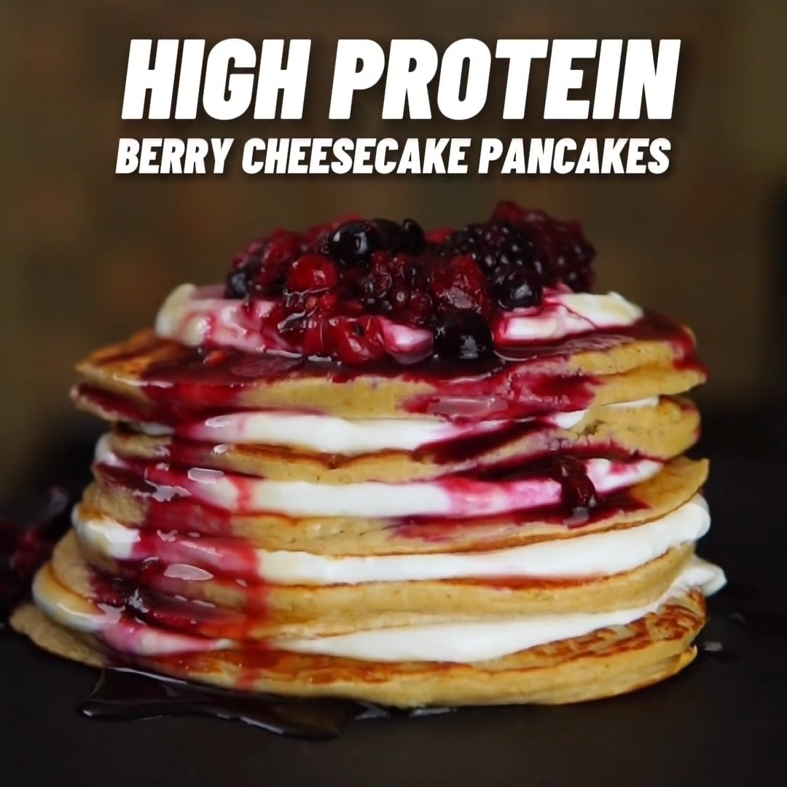

Hotcakes Cheesecake Moras
Ingredientes:
Dry Ingredients:
- 50 g de harina de avena
- 45g de proteína en polvo de vainilla
- 1 cucharadita de polvo de hornear
- Una pizca de sal (opcional)
Wet ingredients:
- 150ml de leche de almendra sin azúcar
- 1 clara de huevo grande (separada de la yema)
- 1/2 cucharadita de extracto de vainilla
Relleno de cheesecake:
- 80g de yogur griego 0%
- 15g de queso crema ligero (marca: Philadelphia Lightest)
Toppings:
- 70g de bayas mixtas congeladas (calienta en el microondas durante 30 segundos a un minuto y mezcla
hasta obtener una mermelada)
- Miel maple sin azucar
Instrucciones:
- Calienta una sartén a fuego medio-bajo, añade un poco de spray de cocina bajo en calorías y deja que
se caliente lo suficiente.
- Agrega una porción tipo bola de helado de masa en la sartén y extiéndela un poco. Cocina durante
aproximadamente 1 minuto o hasta que veas que aparecen burbujas en la parte superior. Voltea y
cocina durante otros 30 segundos a un minuto (se seguirán cocinando con el calor residual una vez
retirados del fuego).